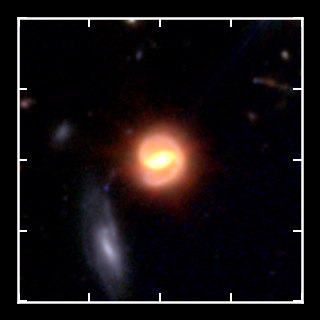
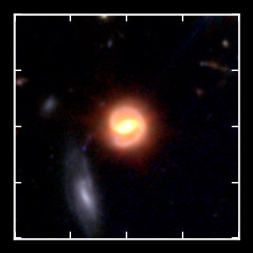
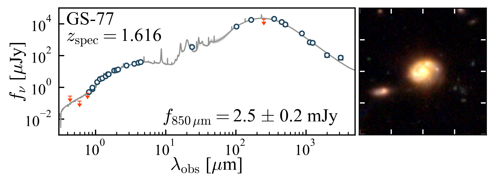

My Research
I'm trying to understand the properties of and processes governing dusty star-forming galaxies (DSFGs) across cosmic time.
 DSFGs are the most powerfully star-forming galaxies in the Universe,
forming hundreds to thousands of solar masses per year. These galaxies contain large quantities of astrophysical dust,
which obscures ultraviolet and optical starlight and reemits the energy at far-infrared and submillimeter wavelengths. DSFGs play an important role around
"cosmic noon", where the Universe's star formation peaked; they are also intimately tied to large-scale structure formation,
often serving as markers of larger, gravitationally interacting structures made up of tens to hundreds of galaxies.
DSFGs are the most powerfully star-forming galaxies in the Universe,
forming hundreds to thousands of solar masses per year. These galaxies contain large quantities of astrophysical dust,
which obscures ultraviolet and optical starlight and reemits the energy at far-infrared and submillimeter wavelengths. DSFGs play an important role around
"cosmic noon", where the Universe's star formation peaked; they are also intimately tied to large-scale structure formation,
often serving as markers of larger, gravitationally interacting structures made up of tens to hundreds of galaxies.
Data and Observing
I'm an observational astronomer whose research all depends on multiwavelengh data from multiple observatories, so I'm very grateful to have had the opportunity to observe with, or use data from, some of the most powerful telescopes on (and off) the planet. I rely in particular on observations from the best submillimeter telescopes in existence, including the James Clerk Maxwell Telescope (JCMT), the Atacama Large Millimeter/submillimeter Array (ALMA), and the NOrthern Extended Millimeter Array (NOEMA). I also use data from the James Webb Space Telescope (JWST), which is already revealing populations of galaxies formed when the Universe was less than 500 million years old.
I have had the chance to observe both remotely and in person with the Keck I and II telescopes in Hawaii, especially with the MOSFIRE spectrograph. I use MOSFIRE to spectroscopically measure the redshifts of DSFGs from bright nebular emission lines.
ALMA (nrao)
JWST (webbtelescope.org)
KECK (keckobservatory.org)
Identifying DSFGs with Red Colors in JWST NIRCam imaging
 
Because of their high dust content, DSFGs tend to look very red in optical and near-IR images. Our group has used
red near-IR colors in deep JWST imaging
to actually identify these galaxies in low-resolution submillimeter maps.

Because of their high dust content, DSFGs tend to look very red in optical and near-IR images. Our group has used
red near-IR colors in deep JWST imaging
to actually identify these galaxies in low-resolution submillimeter maps.
Using ALMA, I verified that this method is capable of identifying the correct near-IR "counterpart" to the submillimeter source up to 95% of the time.
I then used this red color selection method to identify a large (~200) uniform sample of DSFGs down to very faint submillimeter brightnesses and study their stellar properties (masses, star-formation rates, etc.) and morphologies (mergers, disks, spiral arms, etc.). I found that, in general, they look like large stellar disks with evidence of bulge growth in their centers—and interestingly, the fainter submillimeter detections have very similar morphologies and masses as the brighter ones.
Dust Properties of DSFGs using ALMA
 We can measure a galaxy's dust mass, temperature, and spectral emissivity by fitting a modified blackbody (MBB) model
to the observed light in the far-infrared to millimeter.
We can measure a galaxy's dust mass, temperature, and spectral emissivity by fitting a modified blackbody (MBB) model
to the observed light in the far-infrared to millimeter.
We used ALMA continuum observations at 870 μm, 1 mm, 2 mm, and 3 mm along with shorter wavelength data from Spitzer, Herschel, and JCMT/SCUBA-2 to pin down the dust emission shape in unprecedented depth and detail for galaxies observed when the Universe was only ~3 billion years old. We compared our results to observations from the local Universe and other DSFG studies, finding pretty consistent measurements and no evidence for dust temperature evolution with redshift for a given IR luminosity.